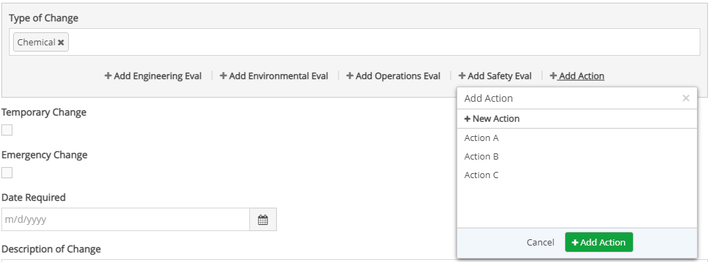
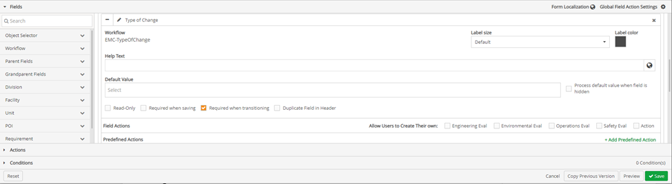
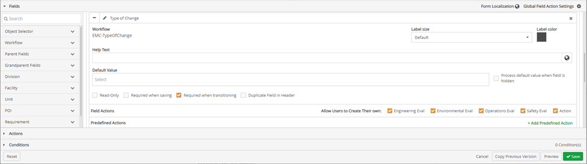

Enabling User Defined Form Fields With Predefined Optional Field Actions
Creating Predefined Optional Field Actions, allows users to create an action or choose from a list of optional predefined field actions, this provides users:
Guided options of course of action that can be taken; or
To create their own course of action.
Select a response in the textbox below a question. If a response for a field has not been selected, all the field actions are greyed out and are disabled.
Click + Add (field action name).
A pop-up with a drop-down list of actions appears. At the top of the list + Add New Action appears.

You can either choose one of the predefined actions or click + Add New Action to create your own field action.
If you click a predefined action, click + Add (field action name).
If + Add New is clicked, fill in all the required information in the form field and then click Save.
You can add as many actions as you want to one response.
Add a User Defined Form Field with Predefined Optional Actions
Once Field Actions have been added, click the Fields ribbon.
Under the Field Sections, click the + icon in front of the field on the form the field action is to be added to. The workflow form type section will expand.

To the right of the Field Action section of the workflow, navigate to Allow Users to Create Their Own.
To enable users to define actions, click the checkboxes in front of the field actions in the Allow Users to Create Their Own section.

If there is more than one Field Action with the same Alias on the form, a question icon will be displayed next to the duplicated icon. When users hover over the icon, the source workflow type will appear.
To create predefined actions, click + Add Predefined Action, in the Predefined Actions section. The Predefined Action window appears.
On the Add Predefined Action window a combination of source action and requirement of action are to be selected.
For source action there are two options: Existing Action or New Action.
For Requirement of action there are two options: Optional or Required. With these options four possible combinations can be created for any predefined Action.